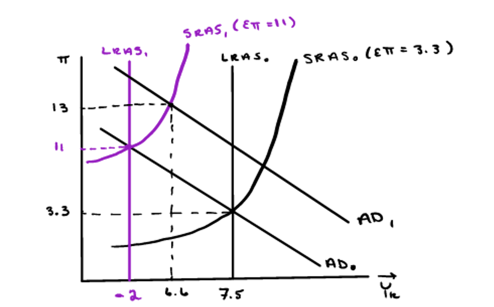
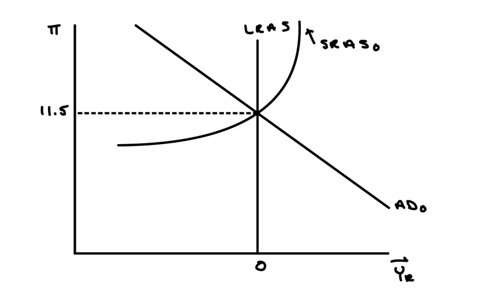

In 1979, the U.S. inflation rate was over 11%. As you know from question #2, the increase in inflation was due to a combination of events, including the expansionary policy of the Federal Reserve.
- (a) Model the U.S. economy in the late 1970s by drawing an AD-LRAS-SRAS graph such that the actual inflation rate and expected inflation rate are both equal to 11.5% and real GDP growth is 0%.
- (b) In 1979, Paul Volcker was appointed chair of the Federal Reserve Board. He is widely credited with ending the high levels of inflation that the U.S. experienced during the 1970s and early 1980s by employing contractionary monetary policy. Given what you learned in class, what impact do you think Volcker's policy had on real economic growth in the U.S.? Show the impact that Volcker's policy had on real GDP growth in the graph that you drew above.
- (c) What impact do you think Volcker's monetary policy had on inflation expectations and actual inflation in the early 1980s? Use the graph that you drew in parts (a) and (b) to illustrate your answer.
Solution:
Part (a): Late-1970s Equilibrium
In the late-1970s:
- Inflation expectations \((\pi^e)\) are anchored at 11.5% due to years of high inflation
- Actual inflation \((\pi)\) is also 11.5% — expectations match reality
- Real GDP growth is 0% — the economy is at its potential output
- The economy is in long-run equilibrium with high inflation
- The AD and SRAS curves intersect at the LRAS

Part (b): Volcker's Contractionary Policy and Growth
Volcker implemented strong contractionary monetary policy by sharply reducing the money supply growth rate.
- This is a leftward shift of the AD curve from \(\text{AD}_0\) to \(\text{AD}_1\)
- The economy moves to a point where inflation remains elevated but real growth falls sharply
- In the short run, the economy experiences a recession
- Real GDP growth becomes negative (the economy contracts)
- This was a deliberate, painful policy choice to break the back of high inflation
Key Insight: There is a short-run trade-off between inflation and growth. Fighting inflation requires accepting lower growth/higher unemployment in the short run.

Part (c): Disinflation through Expectations Anchoring
Over time, Volcker's sustained contractionary policy succeeded in reducing inflation expectations:
- As inflation remains lower for several periods, households and firms gradually revise expectations downward
- Workers accept lower wage growth; firms moderate price increases
- The SRAS curve shifts downward from \(\text{SRAS}_0\) to \(\text{SRAS}_1\)
- Actual inflation falls to \(\pi_1\) (a lower level)
- Real growth gradually recovers toward potential as inflation expectations fall
- The economy transitions from the recession toward a new long-run equilibrium at lower inflation

Summary: Volcker's policy demonstrates how disinflation works in practice. In the short run, fighting inflation is costly in terms of lost growth and jobs (the recession of 1981–82). However, by maintaining the restrictive stance long enough to change inflation expectations, the economy eventually stabilizes at a lower inflation rate with restored growth. This highlights the importance of central bank credibility in anchoring expectations.